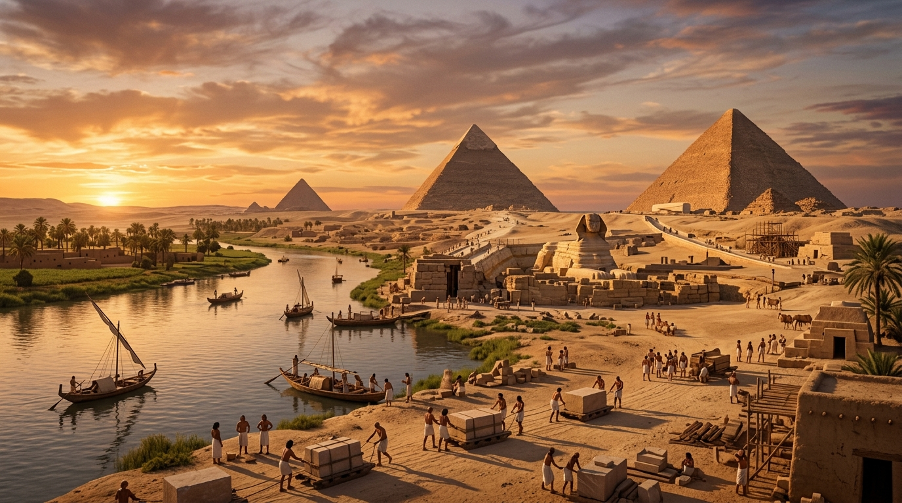

A Fornalha de Ferro e o Ventre da Nação de Israel
O Egito Antigo é a primeira e mais duradoura superpotência mundial a cruzar o caminho do povo da aliança. Mais do que um mero cenário geográfico, o império dos faraós serviu paradoxalmente como o ventre protetor onde uma pequena família patriarcal se multiplicou, e, séculos mais tarde, como a "fornalha de ferro" da escravidão. Situado no isolamento seguro do rio Nilo, cuja regularidade agrícola contrastava com a vulnerabilidade climática de Canaã, o Egito figurava como o celeiro do mundo antigo e o palco do primeiro e maior ato de redenção divina na história do Antigo Testamento.
Índice do Estudo:
- 1. A Era Patriarcal: Refúgio, José e a Soberania Divina
- 2. A Nova Dinastia, a Paranoia e a Servidão Amarga
- 3. O Confronto Cósmico e o Julgamento dos Deuses
- 4. O Sangue do Cordeiro e o Arquétipo da Redenção
- 5. Tabela de Resumo e Aplicação Prática
1. A Era Patriarcal: Refúgio, José e a Soberania Divina
A relação de Israel com a civilização egípcia tem raízes profundas. Abraão desceu ao Egito em tempos de fome, um padrão de migração que se repetiria ao longo da história bíblica. Contudo, foi através da dramática saga de José que o Egito assumiu um papel central na providência de Deus. Vendido como escravo por seus irmãos em um ato de traição, José passou da masmorra mais escura ao palácio mais iluminado do mundo, sendo elevado ao posto de Grão-Vizir (o segundo homem mais poderoso de todo o império).
A interpretação profética de José acerca do sonho do Faraó — prevendo sete anos de fartura seguidos por sete de fome global — não apenas salvou o império egípcio do colapso econômico, mas pavimentou o caminho para a preservação de sua própria família. Pela graça de Deus, José transformou o império pagão num porto seguro, atraindo Jacó e os setenta membros de seu clã para a fértil região de Gósen. Ali, protegidos pelo favor real, a promessa feita a Abraão de que sua descendência seria tão numerosa quanto as estrelas do céu começou a se cumprir fisicamente.
2. A Nova Dinastia, a Paranoia e a Servidão Amarga
A estabilidade secular dos hebreus ruiu com uma reviravolta dinástica registrada de forma sombria em Êxodo 1: "Levantou-se um novo rei sobre o Egito, que não conhecera a José". Historiadores sugerem que este período pode coincidir com a expulsão dos hicsos (governantes de origem semítica) e a ascensão de um império egípcio altamente nacionalista e militarizado. Tomado por uma severa paranoia demográfica, o novo Faraó viu na população israelita uma ameaça à segurança interna do Estado.
A hospitalidade de séculos deu lugar à tirania institucionalizada. Os hebreus foram reduzidos à escravidão brutal, submetidos ao chicote dos capatazes e forçados a extrair barro e moldar tijolos sob o sol escaldante para edificar as cidades-celeiros de Pitom e Ramessés. Quando a opressão física não conseguiu frear a proliferação do povo, o império apelou para o genocídio patrocinado pelo Estado: o decreto real exigia que todos os recém-nascidos do sexo masculino fossem lançados nas águas do Nilo, numa tentativa explícita de extinguir a linhagem e a identidade de Israel.
3. O Confronto Cósmico e o Julgamento dos Deuses
Foi do meio desse clamor agonizante que Deus chamou Moisés a partir de uma sarça ardente no deserto, enviando-o de volta à corte mais temida da terra com uma exigência divina inegociável: "Deixa o meu povo ir". O embate que se seguiu entre Moisés e o Faraó não foi uma simples negociação diplomática, mas uma guerra teológica sem precedentes. As dez pragas que assolaram o Egito foram golpes cirúrgicos do Criador contra a idolatria e o orgulho do império.
A Bíblia revela que Deus executou "juízo contra os deuses do Egito" (Ex 12:12). Cada praga desbancou e humilhou uma divindade específica do panteão egípcio: a transformação do Nilo em sangue expôs a impotência de Hapi (deus do Nilo) e de Osíris; as pragas sobre o gado feriram a deusa-vaca Hator e o boi Ápis; os três dias de trevas espessas apagaram completamente o poderoso e supremo deus-sol, Rá. Por fim, a aterradora décima praga aniquilou os primogênitos da terra, provando de uma vez por todas que o Faraó não era um deus encarnado e doador da vida, mas apenas um homem mortal sujeito à soberania do Deus de Israel.
4. O Sangue do Cordeiro e o Arquétipo da Redenção
O ápice da libertação ocorreu na noite da primeira Páscoa. O sangue do cordeiro sem defeito, aspergido com hissopo nos umbrais das portas dos israelitas, foi a única proteção capaz de reter o anjo do juízo. No dia seguinte, uma nação de ex-escravos marchou livremente em direção ao Mar Vermelho, onde a outrora invencível cavalaria e os carros de guerra do Faraó foram definitivamente engolidos pelas águas revoltas.
Na teologia de toda a Bíblia subsequente, o Egito foi eternizado como o arquétipo do mundo caído, a representação máxima da escravidão do pecado e da escuridão espiritual. A dramática saída do Egito prefigura o plano definitivo de Deus para o universo: a obra redentora de Jesus Cristo, o verdadeiro Cordeiro de Páscoa, que resgata a humanidade do cativeiro eterno e a conduz, em liberdade, para o Seu Reino de luz.
5. Tabela de Resumo e Aplicação Prática
| Elemento no Egito | Significado Histórico / Teológico | Sombra do Redentor (Cristo) |
|---|---|---|
| A Escravidão em Fios de Lama | O cativeiro brutal sob o império dos faraós. | A libertação da escravidão espiritual operada por Cristo. |
| O Cordeiro Pascal | O sangue nos umbrais que evitou o anjo da morte. | Jesus, o Cordeiro de Deus que tira o pecado do mundo. |
| A Travessia do Mar Vermelho | O corte definitivo com o passado de opressão. | A regeneração e o batismo em novidade de vida. |
💡 Aplicação Prática: O que aprendemos hoje?
A história do Egito e do Êxodo ecoa diretamente em nossa jornada espiritual diária. Todos nós já estivemos presos nas malhas de um "Egito" particular — seja dominados por velhos vícios, medos, culpa ou escravidões emocionais que pareciam intransponíveis. Tentamos nos salvar pelas próprias forças, mas o cativeiro apenas se tornava mais pesado.
A grande mensagem do Evangelho é que a libertação não vem do esforço humano, mas da intervenção poderosa de Deus e do sangue do Cordeiro. Assim como os israelitas precisaram sair de vez do Egito e atravessar o mar para não mais olhar para trás, somos chamados a abandonar as práticas do mundo e caminhar rumo à liberdade que Cristo conquistou. Quando enfrentarmos desertos ou gigantes em nosso caminho, devemos lembrar que o mesmo Deus que derrotou os deuses do Egito continua soberano sobre qualquer superpotência ou problema que tente nos acorrentar.
Continue sua jornada:
- Voltar ⬅️ Ver todos os impérios
- Temas 📚 Ver todos os estudos
Apoie este projeto 🌱
Se este estudo foi útil, considere apoiar a manutenção do site.
Chave PIX (Celular):
marcosmontanaria@gmail.com